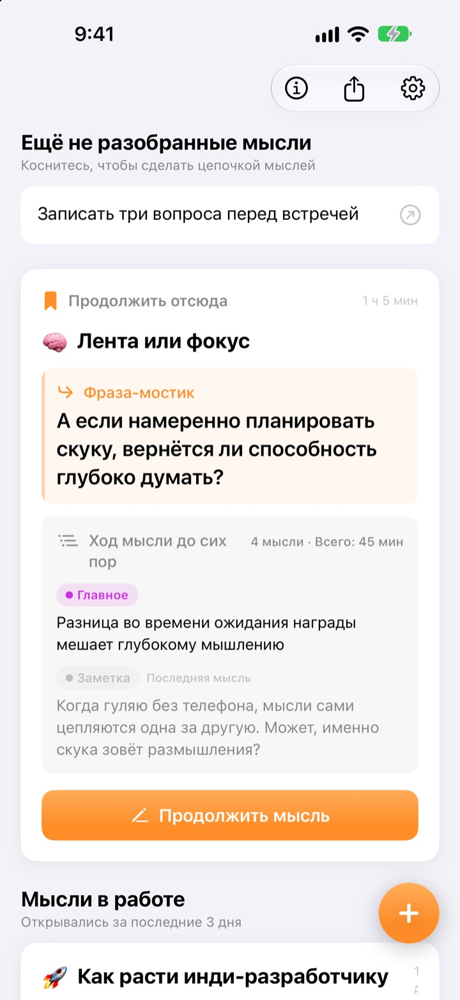
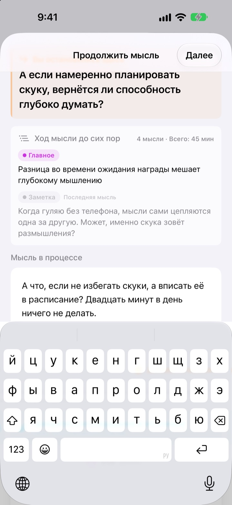
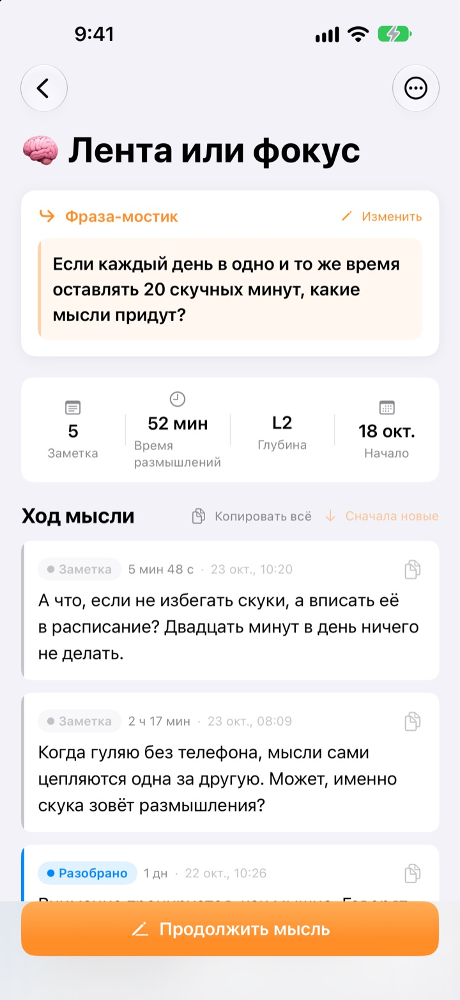
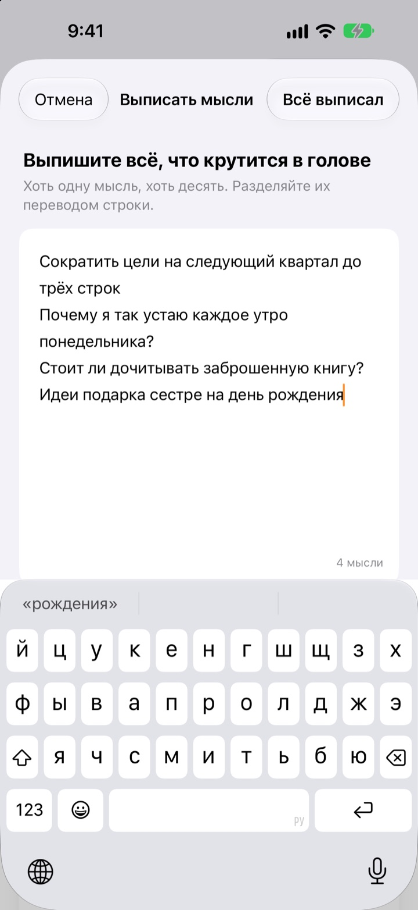

Вчерашняя недодуманная мысль
сегодня продолжается с того же места
Останавливаясь, оставьте одну строку, с которой продолжите. Когда откроете приложение снова, она будет ждать наверху.
Все функции бесплатны. Без учётной записи, всё хранится на устройстве.

Оставьте фразу-мостик
Запишите мысль и оставьте фразу, с которой продолжите в следующий раз. Всё идёт в том же порядке, что и в приложении.
На чём я вообще остановился?
Открываете заметку недельной давности, а там пара выводов и ни слова о вопросе, который вы собирались обдумать дальше. И приходится начинать с нуля. ThinkFlow просит оставить этот следующий вопрос в момент остановки, чтобы при возвращении сразу начать с него.
Фраза-мостик ждёт наверху
Закончите размышление одной строкой — вопросом, с которого продолжите. Когда вернётесь, эта фраза, главное на данный момент и последняя мысль будут на одной карточке. Восстанавливать ничего не нужно.
Фразу видно и в виджете на экране «Домой», а пока вы думаете, время идёт на экране блокировки и в Dynamic Island.

От заметки до главного
Поднимайте каждую мысль по четырём уровням: заметка, разобрано, главное и итог. С первого взгляда видно, насколько она созрела.
То, что вы искали или спрашивали, прикрепляется как материал — отдельно от ваших собственных мыслей.

Сначала освободите голову
Запишите всё, что крутится в голове, по строке на мысль, и выберите ту, над которой хотите работать сейчас: она станет веткой. Остальное подождёт на главном экране, пока вы его не коснётесь.
Мысли, к которым вы не прикасались больше трёх дней, собираются в разделе «Мысли к возвращению».

Три шага, чтобы начать
- 1
Выпишите мысли
По строке на мысль, затем выберите ту, что стоит развивать.
- 2
Думайте дальше
Добавляйте каждую новую идею отдельно — потом её проще доработать.
- 3
Оставьте фразу и закройте
В следующий раз вы начнёте с неё.
Уровень проработки
- Заметка
- Сырая мысль
- Разобрано
- Разобрано раз
- Главное
- Только главное
- Итог
- Итоговое резюме
Коснитесь значка уровня рядом с мыслью, чтобы его изменить. Главное и итоги при возвращении показываются на карточке первыми.
Фраза-мостик ждёт наверху
Обязательно ли писать фразу-мостик?
Если вы что-то добавили — да: экран «Продолжить мысль» закрывается, только когда вы оставите следующую строку. Если ничего не написали, просто закройте его. Секрет в том, чтобы останавливаться, пока ещё есть что сказать, а не когда зашли в тупик.
Что такое «Мысли к возвращению»?
Ветки, которые вы не открывали больше трёх дней, собираются отдельно на главном экране, чтобы почти забытая мысль могла продолжиться с её фразы-мостика.
Как сообщить об ошибке или предложить идею?
Воспользуйтесь пунктом «Отправить отзыв» в настройках приложения, напишите на адрес ниже или создайте issue на github.com/M1zz/ThinkFlow/issues. Будем рады любому сообщению.
Это правда всё бесплатно?
Да, все функции бесплатны, без рекламы и регистрации. «Поддержать разработчика» в настройках — только по желанию и ничего дополнительно не открывает.
Вопросы или предложения? Пишите на leeo@kakao.com.